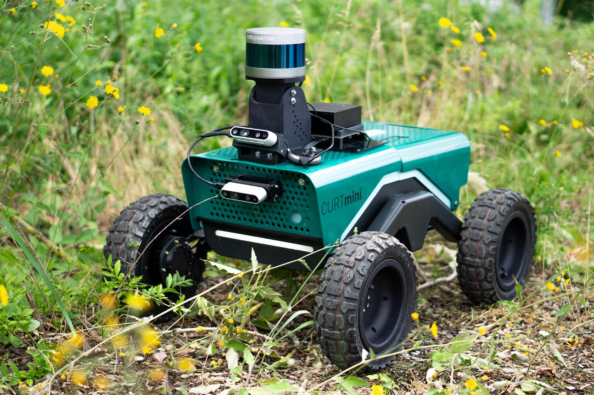
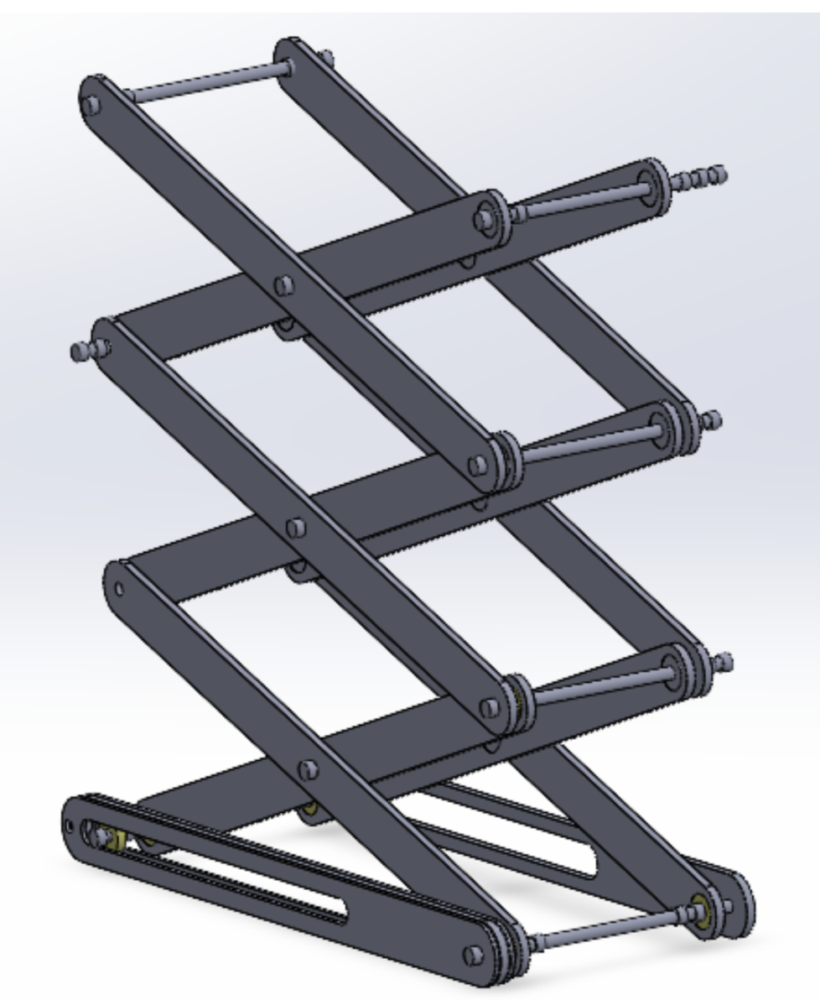
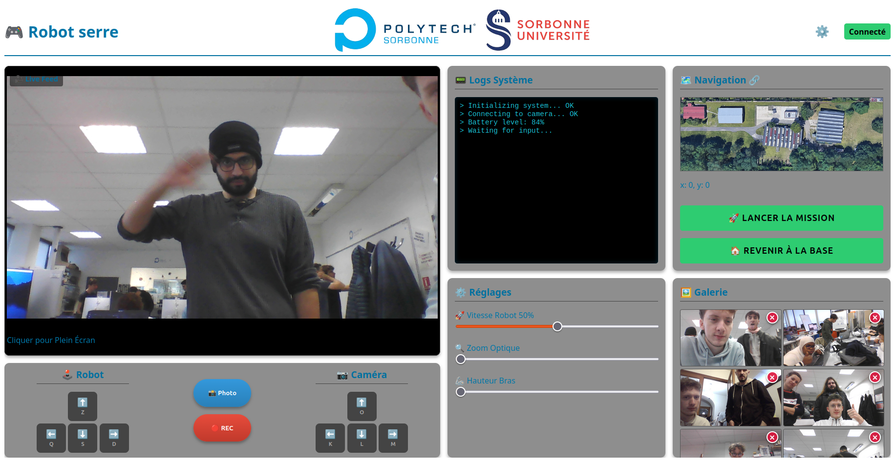

L'innovation robotique au service de la biodiversité à Saint-Cyr
Le projet AGRI-BOT permet de surveiller la santé des cultures dans la serre connectée et le verger de Saint-Cyr directement depuis le campus de Jussieu. Grâce à cette base mobile modulaire, nous remplaçons les capteurs fixes par un système agile capable de détecter les besoins ou les maladies des plantes.

Base mobile Curt-Mini robuste et étanche pour les environnements humides.

Mécanisme de levage motorisé permettant d'adapter la vue à la hauteur des plantes.
Solutions robustes privilégiées pour la pérennité du projet :
| Élément | Fonction technique | Justification |
|---|---|---|
| Base Curt Mini | Locomotion | Étanchéité et franchissement d'obstacles en milieu humide. |
| Système Pantographe | Élévation | Solution mécanique fiable, stable et économique ("Low-Tech"). |
| Cerveau ROS2 | Intelligence | Navigation autonome, fusion de données et évitement d'obstacles. |
Contrôle total via ROS2 et ZENOH reliant Saint-Cyr à Jussieu. L'interface supporte les modes direct, autonome et le stockage des données hors-ligne.

Interface de supervision permettant le suivi du flux vidéo et de la télémétrie en temps réel.
Encadrés par : Aline BAUDRY